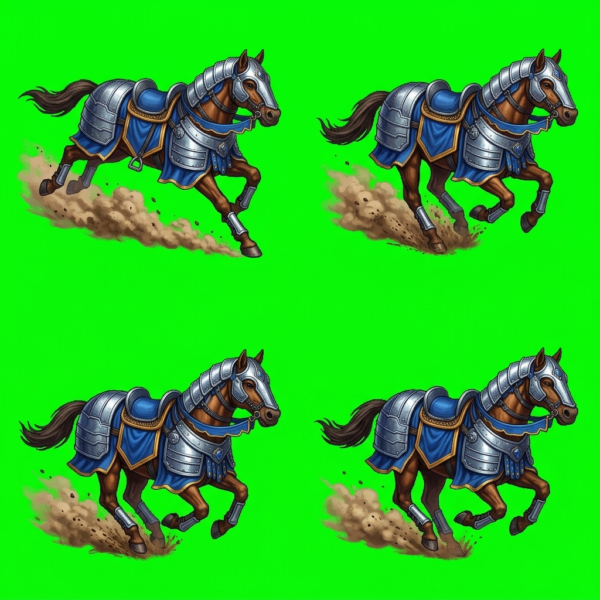

한국처럼: 주인공(스킬 효과로 감싸서 움직이는 것) · 장수(탈 수 있으면 탐) · 맞은 뒤(적·땅에 남는 여운). 깃발·종처럼 사용자가 싫어한 '날아가는 물건'은 정령·자연으로 바꿨어요. 고칠 줄만 알려 주세요.
아래는 나노바나나 시험 그림(룩셈부르크 1 군마 4칸, 약 30초).

| 나라 | 스킬 | 주인공 | 장수 | 맞은 뒤 |
|---|---|---|---|---|
| 룩셈부르크 1 | 눈먼 기사왕의 돌격 돌진 | 갑옷 입힌 군마 (양옆에 빛으로 된 기사 2명이 함께 달림) | 말에 탐 | 적: 짓밟혀 기절(머리 위 별빛 고리) · 땅: 발굽 자국 |
| 룩셈부르크 2 | 사자 깃발 포효 범위 | 황금 사자 정령이 달려나가 포효 (깃발 대신) | 장수 앞에서 사자가 출발 | 적: 겁먹고 뒤로 밀림(금빛 위압 기운) · 땅: 포효 음파 고리 |
| 아일랜드 1 | 광전사 회오리 범위 | 붉은 회오리바람 + 그 속에서 도는 광전사 도끼 | 장수가 회오리 한가운데서 돎 | 적: 베인 붉은 기운 · 땅: 회오리 긁힌 자국 |
| 아일랜드 2 | 게 볼그 돌격 돌진 | 바다 물살 (붉은 가시 창 기운이 앞장섬) | 물살 위에 타고 돌진 | 적: 붉은 가시 기운이 박힘 · 땅: 물웅덩이 |
| 스위스 1 | 알프스 미늘창 덫 설치 | 눈 덮인 바위 땅에서 미늘창 다발이 솟음 | 장수가 땅을 찍음 | 적: 얼어 느려짐(서리) · 땅: 눈·얼음 깔림 |
| 스위스 2 | 사과 과녁 석궁 연사 | 빛을 끄는 석궁 화살 | 장수가 쏨 | 적: 화살 박힘 · 땅: 사과 조각 튐 |
| 미국 1 | 랜턴 신호탄 튕김 연사 | 등불에서 튀어나와 튕기는 불빛 신호탄 | 장수가 든 등불에서 발사 | 적: 불빛 표식(빛남) · 땅: 불티 |
| 미국 2 | 자유의 종 파동 범위 | 공중에서 흔들리며 울리는 금 간 청동 종 | 장수가 던진 자리 위에 뜸 | 적: 어지러움(흔들림) · 땅: 금 간 음파 자국 |
| 네덜란드 1 | 함포 일제 사격 연사 | 돛단 작은 포함(대포 5문) + 날아가는 포탄 | 장수가 배 갑판에 탐 | 적: 젖고 그을림 · 땅: 물 튐 + 연기 |
| 네덜란드 2 | 바닷바람 순간 돌파 돌진 | 주황 돛을 단 작은 배가 바람 타고 질주 | 배에 탐 | 적: 물보라에 밀림 · 땅: 물웅덩이 |
| 덴마크 1 | 잠든 거인의 표식 돌격 돌진 | 잠에서 깬 돌 거인이 성큼 돌진 | 거인 어깨에 탐 | 적: 돌에 짓눌림 · 땅: 부서진 바위 조각 |
| 덴마크 2 | 크론보르 수호 회전 범위 | 이끼 낀 성벽 돌들이 살아서 원을 그리며 굴러감 | 장수 둘레 | 적: 돌에 맞아 비틀 · 땅: 돌무더기 |
| 오스트리아 1 | 용기병 돌격 돌진 | 질주하는 용기병 군마 | 말에 탐 | 적: 짓밟힘 · 땅: 불꽃 튀는 편자 자국 |
| 오스트리아 2 | 빈 성벽 이중 베기 범위 | 흰·빨강 성벽 톱니가 땅에서 원으로 솟음 | 장수가 칼로 그음 | 적: 베임 · 땅: 돌 부스러기 |
| 호주 1 | 부메랑 투척 연사 | 살아 있는 듯 휘며 돌아오는 부메랑 | 장수 손으로 돌아옴 | 적: 붉은 흙먼지 · 땅: 붉은 흙 자국 |
| 호주 2 | 부메랑 회오리 범위 | 부메랑 3개가 붉은 사막 회오리를 몰고 옴 | 장수가 던짐 | 적: 회오리에 들림 · 땅: 붉은 모래 더미 |
| 독일 1 | 강철 손 회전베기 범위 | 대검을 쥔 거대한 강철 손이 돌며 벰 | 장수 손과 이어짐 | 적: 쇳불티 · 땅: 원형 베기 자국 |
| 독일 2 | 강철 손 내려찍기 돌진 | 하늘에서 떨어지는 거대한 강철 주먹 | 주먹 위에 타고 내리꽂음 | 적: 납작 눌림 · 땅: 금 간 구덩이 |
| 스웨덴 1 | 캐롤린 돌격 대형 돌진 | 눈보라를 일으키며 달리는 군마 + 빛으로 된 병사 2명 | 말에 탐 | 적: 얼어붙음 · 땅: 눈보라 자국 |
| 스웨덴 2 | 룬스톤 원진 설치 | 하늘에서 떨어져 원진을 짜는 룬스톤(금 소용돌이가 숨 쉬듯 빛남) | 장수가 가리킴 | 적: 금빛 룬 사슬에 묶임 · 땅: 룬 원 |
| 캐나다 1 | 도끼 던지기 연사 | 회전하며 나는 벌목꾼 도끼 | 장수가 던짐 | 적: 도끼 박힘 · 땅: 나무 부스러기 |
| 캐나다 2 | 단풍 소용돌이 범위 | 단풍잎 정령 회오리 | 장수가 부름 | 적: 잎에 휘감김 · 땅: 단풍잎 깔림 |
| 핀란드 1 | 엘크 스키 질주 돌진 | 눈을 가르는 엘크 정령 | 엘크 등에 탐 | 적: 얼어붙음 · 땅: 눈 자국 |
| 핀란드 2 | 칸텔레 노래 함정 설치 | 공중에서 스스로 울리는 칸텔레 + 오로라 물결 | 장수가 던짐 | 적: 졸음(오로라 기운에 감겨 느려짐) · 땅: 오로라 빛 웅덩이 |
| 프랑스 1 | 백합 깃발 휩쓸기 범위 | 금빛 백합 꽃잎 폭풍 (깃발 대신) | 장수가 휘두름 | 적: 꽃잎에 휩쓸림 · 땅: 꽃잎 깔림 |
| 프랑스 2 | 오를레앙 돌파 돌진 | 성문을 부수는 나무 공성 망치 | 망치 수레에 탐 | 적: 튕겨 나감 · 땅: 부서진 성문 조각 |
| 이탈리아 1 | 군단 진영 설치 | 빛으로 된 군단 방패벽이 네 면에 솟음 | 장수가 가운데 | 적: 방패에 막혀 밀림 · 땅: 방패 자국 |
| 이탈리아 2 | 자마 군단 전진 찌르기 연사 | 전진하며 찌르는 방패·창 대열 | 대열 맨 앞 | 적: 찔려 밀림 · 땅: 발자국 줄 |
| 스페인 1 | 티소나 일섬 돌진 | 불타는 명검의 일직선 칼빛 | 칼빛과 함께 돌진 | 적: 불붙음 · 땅: 불탄 일직선 자국 |
| 스페인 2 | 콜라다 회전베기 범위 | 은빛 칼날 회오리 | 장수가 가운데서 돎 | 적: 베임 · 땅: 은빛 원형 자국 |
| 체코 1 | 전차 요새 설치 | 굴러와 원진을 짜는 전투 수레들 | 수레에 탐 | 적: 수레에 부딪혀 밀림 · 땅: 바퀴 자국 |
| 체코 2 | 보헤미아 도리깨 범위 | 휘도는 쇠사슬 도리깨 | 장수가 휘두름 | 적: 어지러움 · 땅: 패인 자국 |
| 이스라엘 1 | 투석 연사 연사 | 바람을 감고 나는 투석 돌 | 장수가 던짐 | 적: 비틀 · 땅: 돌 파편 |
| 이스라엘 2 | 검 돌격 돌진 | 청동 검 + 사막 모래바람 | 모래바람 타고 왕복 | 적: 모래에 덮임(느려짐) · 땅: 모래 더미 |
| 리투아니아 1 | 기둥 문장 창돌격 돌진 | 방패 든 갑옷 군마 | 말에 탐 | 적: 짓밟힘 · 땅: 발굽 자국 |
| 리투아니아 2 | 기마 투창 3연 연사 | 하늘에서 번개처럼 떨어지는 투창 3개 | 장수가 던짐 | 적: 창 꽂힘 · 땅: 꽂힌 창 + 흙먼지 |
| 뉴질랜드 1 | 은빛 고사리 결계 설치 | 땅에서 말려 올라와 펴지는 은빛 고사리 | 장수가 던짐 | 적: 고사리에 휘감김 · 땅: 고사리 덤불 |
| 뉴질랜드 2 | 고사리 씨앗 질주 돌진 | 은빛 바람 (지나간 자리에 씨앗) | 바람 타고 질주 | 적: 씨앗이 싹터 묶임 · 땅: 은빛 새싹 |
| 일본 1 | 노 목검 일격 돌진 | 바다 물결을 감은 나무 목검 | 물결 타고 돌진 | 적: 물보라에 밀림 · 땅: 물 자국 |
| 일본 2 | 이도류 삼연 베기 돌진 | 두 칼의 바람 칼날 | 순간 이동하며 벰 | 적: X자 베기 기운 · 땅: X자 자국 |
| 포르투갈 1 | 항해의 바람 범위 | 바람 탄 작은 범선 | 배에 탐 | 적: 바람에 밀림 · 땅: 물웅덩이 |
| 포르투갈 2 | 루시타니아 창 찌르기 연사 | 바람을 감은 목동 창 | 장수가 찌름 | 적: 찔려 밀림 · 땅: 흙먼지 |
| 폴란드 1 | 날개 기병 돌격 돌진 | 깃털 날개가 펄럭이는 후사르 군마 | 말에 탐 | 적: 짓밟힘 · 땅: 깃털 흩날림 |
| 폴란드 2 | 검은 기사 장창 휩쓸기 범위 | 돌며 휩쓰는 검은 장창 | 장수가 휘두름 | 적: 그을림 · 땅: 검은 원형 자국 |
| 헝가리 1 | 후사르 사브르 연격 연사 | 원을 그리며 달리는 기병 칼빛 | 말에 탐 | 적: 베임 · 땅: 발굽 원 |
| 헝가리 2 | 맷돌 장사 돌진 돌진 | 굴러가는 거대한 맷돌 | 맷돌 위에 올라 굴림 | 적: 깔려 납작 · 땅: 갈린 자국 + 밀가루 먼지 |
| 슬로바키아 1 | 타트라 도끼 내려찍기 범위 | 떨어지는 도끼 + 땅에서 솟는 바위 기둥 | 장수가 내려찍음 | 적: 바위에 튕겨 올라감 · 땅: 바위 기둥 |
| 슬로바키아 2 | 발라슈카 연속 던지기 연사 | 튕기며 도는 지팡이 도끼 | 장수가 던짐 | 적: 비틀 · 땅: 나무 부스러기 |
| 그리스 1 | 스파르타 팔랑크스 설치 | 청동 방패·창 벽이 전진 | 대열 가운데 | 적: 창에 막혀 밀림 · 땅: 방패 자국 |
| 그리스 2 | 아킬레우스 창 돌격 돌진 | 청동 전차 (끝에서 빛나는 창이 날아감) | 전차에 탐 | 적: 창 번개 · 땅: 꽂힌 창 + 금 간 자국 |
| 튀르키예 1 | 코푸즈 칼날 고리 범위 | 장수 머리 위에서 도는 칼날 3개 고리 | 장수 위 | 적: 베임 · 땅: 원형 자국 |
| 튀르키예 2 | 서사시 영웅 돌파 돌진 | 휘어진 길을 달리는 영웅의 군마 | 말에 탐 | 적: 짓밟힘 · 땅: 먼지 길 |
| 칠레 1 | 산바람 범위 | 날개를 크게 펴고 솟구치는 콘도르 정령 | 장수 위에서 날아감 | 적: 바람에 띄워짐 · 땅: 흰 깃털 |
| 칠레 2 | 산바람 소용돌이 범위 | 은빛 테를 두른 검은 바람 소용돌이 | 장수가 보냄 | 적: 휘말려 돎 · 땅: 나선 자국 |
| 멕시코 1 | 독수리 전사 일격 돌진 | 내리꽂히는 거대한 독수리 | 독수리 등에 탐 | 적: 쪼여 넘어짐 · 땅: 깃털 + 갈라진 땅 |
| 멕시코 2 | 마쿠아우이틀 날개 베기 범위 | 흑요석 날이 빛나는 곤봉 휘두르기 | 장수가 휘두름 | 적: 베임 · 땅: 흑요석 조각 |
| 콜롬비아 1 | 엘도라도 황금 함성 범위 | 황금 가루 회오리 | 장수가 외침 | 적: 황금으로 굳음(잠깐 멈춤) · 땅: 금가루 |
| 콜롬비아 2 | 황금 그림자 돌격 돌진 | 황금빛 재규어 정령 | 재규어 등에 탐 | 적: 할퀸 금빛 자국 · 땅: 금빛 발자국 |